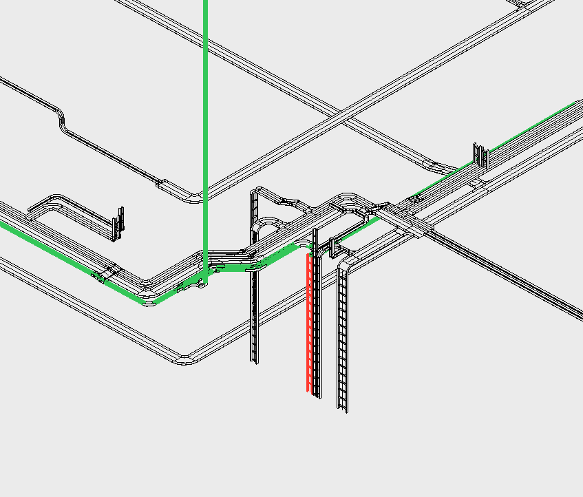

Voor (BIM-)Engineers, door BIM-Engineers
BIM LYNK (onderdeel van CVL Solutions) ontwikkelt tools voor elektrotechnische engineers en adviseurs. Van een vulgraadcalculator tot een complete Revit add-in met clearance- en supporttools.
Fill Rate Light NL is een standalone beta tool. LYNK Electrical is de betaalde Revit add-in die groeit met elke versie.
Standalone tool - apart van LYNK Electrical
Vulgraadcalculator voor kabelgoten in Revit. Excel-workflow en 3D-kleurvisualisatie. Aparte download. Beta periode: 14 april - 13 juli 2026.
De complete Revit add-in (betaald)
V1 bevat Cable Tray Clearance Generator en Cable Tray Support Generator. Meer tools worden stapsgewijs toegevoegd in toekomstige versies.
Fill Rate Light NL (beta) + LYNK Electrical V1 (Clearance & Support Generator)
Standalone tool - apart van LYNK Electrical
De vulgraadcalculator voor kabelgoten in Revit. Bereken snel en nauwkeurig de vulgraad van je kabelgoten met een vertrouwde Excel-workflow. Ideaal voor engineers en adviseurs bij snelle controles en offertefasen.
Beta periode: 14 april - 13 juli 2026. Compatibel met Revit 2023, 2024, 2025 en 2026.

De complete Revit add-in voor elektrotechniek. V1 bevat de eerste twee tools, met meer in toekomstige versies.
Genereer transparante clearance-volumes rondom kabelgoten. Visualiseer de benodigde vrije ruimte en detecteer clashes vroegtijdig.
Automatische plaatsing van ondersteuningsbeugels met optimale tussenafstanden. Bespaart uren handmatig werk.

Meld je aan als beta tester voor Fill Rate Light NL of LYNK Electrical. Geen spam, alleen updates over nieuwe releases.